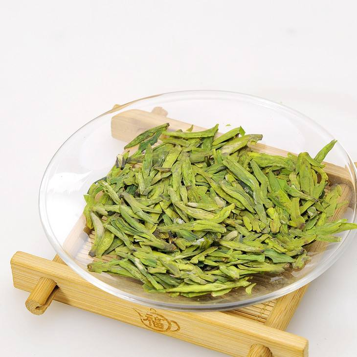
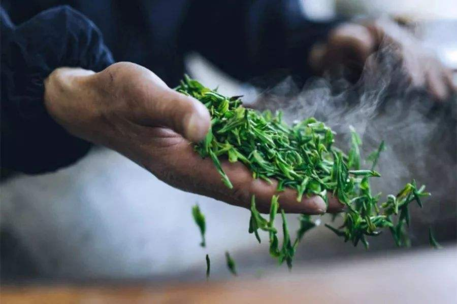
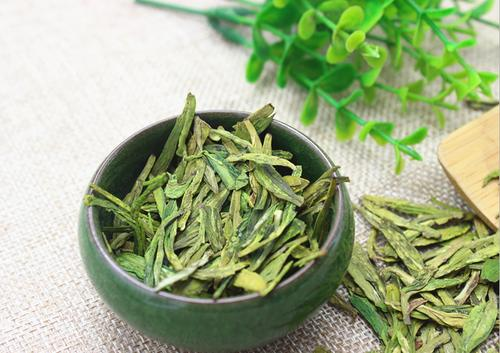

“欲把西湖比西子，从来佳茗似佳人” 西湖龙井因产于中国杭州西湖的龙井茶区而得名，龙井既是地名，又是泉名和茶名。特级西湖龙井茶扁平光滑挺直，色泽嫩绿光润，香气鲜嫩清高，滋味鲜爽甘醇，叶底细嫩呈朵。西湖美景、龙井名茶，早已名扬天下。游览西湖，品饮龙井茶，是旅游者到杭州的最好享受之一。
1

西湖龙井属于绿茶是我国的第一名茶，产于浙江杭州西湖的狮峰、龙井、五云山、虎跑一带，历史上曾分为“狮、龙、云、虎、梅”五个品类，其中多认为以产于狮峰的品质为最佳。形光扁平直，色翠略黄似糙米色，滋味甘鲜醇和，香气幽雅清高，汤色碧绿黄莹；叶底细嫩成朵。
2

龙井茶优异的品质 精细的采制工艺所形成的。采摘1芽1叶和1芽2叶初展的芽叶为原料，经过摊放、炒青锅、回潮、分筛、辉锅、筛分整理(去黄片和茶末)、收灰贮存数道工序而制成。龙井茶炒制手法复杂，依据不同鲜叶原料不同炒制阶段分别采取“抖、搭、捺、拓、甩、扣、挺、抓、压、磨”等十大手法。
3

西湖龙井分为六个等级 特级：一芽一叶初展，扁平光滑。一级：一芽一叶开展，含一芽二叶初展，较扁平光洁。二级：一芽二叶开展，较扁平。三级：一芽二叶开展，含少量二叶对夹叶，尚扁平。四级：一芽二、三叶与对夹叶，尚扁平，较宽、欠光洁。五级：一芽三叶与对夹叶，扁平较毛糙。
4